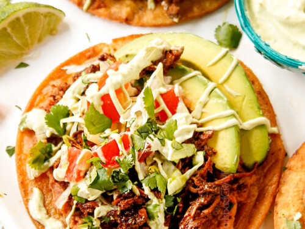

Tostadas

Descrption
This recipe is a super simple version for those of you who like to spend about 5 minutes preparing dinner after work.
Ingredients
- Tostadas
- Refried beans
- Lettuce
- Cheese
- Cholula or any other hot sauce
Steps
- Heat up your refried beans on medium heat.
- Once they're warmed up you're ready to prepare.
- Just slap as much beans as you can on the tostada, add lettuce and cheese, then top it with hot sauce.
- That's it! Eat as many as you'd like!